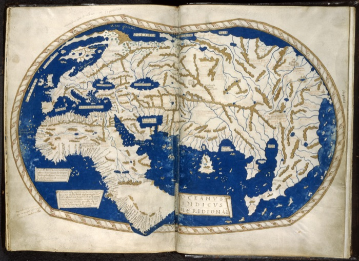

Förderschwerpunkt Lernen · 7. Klasse · GPG
Aufbruch in eine neue Zeit
Buchdruck, Seefahrer, Kolumbus und die Inka. Fünf Stunden über die Zeit um 1500.
- 5 Stunden + Probe
- Präsentation, Papier und iPad
- nach Stark in Gesellschaftslehre 2

Der Plan
Jede Stunde hat einen eigenen Abschnitt mit Präsentation und allen Blättern zum Öffnen, Drucken und Herunterladen.
Stunde 1: Der Buchdruck
Buch S. 36–38
Die Kinder erklären, warum der Buchdruck um 1450 die Welt verändert hat.
- Kapitelstart und Zeitstrahl
- Bildimpuls: Mönch in der Schreibstube
- Gutenberg und die Lettern
- Druckschritte ordnen, Stempelaktion
- Hefteintrag
- PräsentationFolien mit Sprechernotizen. In Canva kannst du selbst ändern.
- Dein Skript zur StundePro Folie: Zeit, was du sagst, Fragen mit erwarteten Antworten, Tipps. Dieselben Notizen stehen auch in der PowerPoint (Referentenansicht). · 4 Seiten
- Hausaufgabe 1: Der BuchdruckAnkreuzen, Druckschritte ordnen, Lückentext, ein Erklärsatz. · 2 Seiten
- Hefteintrag zum EinklebenLückenstreifen mit Wörterbox, zwei Streifen pro Seite. · 1 Seite
Stunde 2: Neue Ideen, neue Wege
Buch S. 40–41
Die Kinder nennen Gründe, warum die Europäer einen Seeweg nach Indien suchten.
- Scheibe oder Kugel?
- Karavelle und Kompass
- Alte Weltkarte von 1489
- Seide und Gewürze: Landweg oder Seeweg
- Hefteintrag
- Hausaufgabe 2: Neue Ideen, neue WegeVerbinden, Richtig/Falsch, alte Weltkarte, ein Erklärsatz. · 2 Seiten
Stunde 3: Kolumbus und die Entdeckung Amerikas
Buch S. 42–44
Die Kinder erzählen die Reise von 1492 nach und erklären den Irrtum mit Indien.
- Kurzfilm Kolumbus 1492
- Die Santa María erkunden
- Tagebuch des Kolumbus
- Indien oder Amerika?
Material in Arbeit.
Stunde 4: Die Inka
Buch S. 48–51
Die Kinder beschreiben die Hochkultur der Inka und was die Spanier mit ihr gemacht haben.
- Machu Picchu
- Merkmale einer Hochkultur
- Der Inkastaat
- Der Untergang der Inka
Material in Arbeit.
Stunde 5: Folgen bis heute
Buch S. 52–54
Die Kinder erklären, warum viele die Entdeckung Amerikas eine Eroberung nennen.
- Sklavenhandel und Dreieckshandel
- Die 500-Jahr-Feier 1992
- Lateinamerika heute
- Kahoot zur Wiederholung
Material in Arbeit.
Für dich
Gesamtpaket und Hinweise. Die Probe liegt nicht hier, sondern nur auf deinem Rechner.
- Alles in einem ZIPAlle Präsentationen und PDFs, die es bisher gibt.
Stand: Die Seite wächst mit. Stunden ohne Material sind noch in Arbeit.
Lehrplanbezug: LehrplanPLUS Bayern, Förderschule, Förderschwerpunkt Lernen, GPG/NT, Lernbereich 3 Zeit und Wandel. Zum Lehrplan
Bildnachweise
Die Bilder auf den Arbeitsblättern stammen von Wikimedia Commons. Einige Bilder in den Canva-Präsentationen sind mit KI erzeugt und keine historischen Quellen.
- Schreiber Jean Miélot am Schreibpult, Buchmalerei um 1456: Jean Le Tavernier, gemeinfrei, Wikimedia Commons
- Gutenberg-Bibel, Anfang Buch Genesis, um 1455: Johannes Gutenberg (Druck), Scan: Jossi, gemeinfrei, Wikimedia Commons
- "Der Buchdrucker", Holzschnitt aus dem Ständebuch 1568: Jost Amman, gemeinfrei, Wikimedia Commons
- Johannes Gutenberg, Kupferstich (17. Jh., Fantasiebildnis): Nicolas de Larmessin, gemeinfrei, Wikimedia Commons
- Flammarions Holzstich: Wanderer schaut über den Rand der Welt (1888): unbekannt, veröffentlicht von Camille Flammarion, gemeinfrei, Wikimedia Commons
- Behaims "Erdapfel", ältester erhaltener Globus (1492), Foto: Globus: Martin Behaim / Georg Glockendon; Foto: Germanisches Nationalmuseum (Upload 2019), CC BY-SA 4.0, Wikimedia Commons
- Nachbau der Karavelle "Boa Esperança" im Hafen von Lagos (Portugal): Norbert Nagel, CC BY-SA 4.0, Wikimedia Commons
- Kompassrose (Windrose) eines Seekompasses, Kupferstich 1747/48: Emanuel Bowen (via Geographicus), gemeinfrei, Wikimedia Commons
- Echter Schiffskompass von 1545 aus dem Wrack der Mary Rose (Holzkasten, Nadel fehlt): Tim Sheerman-Chase, CC BY 4.0, Wikimedia Commons
- Weltkarte des Henricus Martellus, um 1489 (ohne Amerika): Henricus Martellus Germanus; British Library, CC0, Wikimedia Commons
- Bildnis eines Mannes, vermutlich Christoph Kolumbus (1519): Sebastiano del Piombo; Metropolitan Museum of Art, gemeinfrei, Wikimedia Commons
- Nachbau der "Santa María" unter Segeln, Clearwater (Florida) 2005: Xrzt, CC BY-SA 4.0, Wikimedia Commons
- "Die Landung des Kolumbus" (1847), Gemälde im US-Kapitol: John Vanderlyn; Foto: Architect of the Capitol, gemeinfrei, Wikimedia Commons
- Karte der vier Reisen des Kolumbus, erste Reise blau (englisch beschriftet): Phirosiberia, CC BY-SA 3.0, Wikimedia Commons
- Gewürzsäcke auf einem Markt (Paprika, Kurkuma u. a.), Tunesien: Bernard Gagnon, CC BY-SA 3.0, Wikimedia Commons
- Seidenstoffe (Dupion-Seide): Smriti Tripathi, CC BY 3.0, Wikimedia Commons
- Ferdinand von Aragón und Isabella von Kastilien, Doppelbildnis 15. Jh.: unbekannter Maler, gemeinfrei, Wikimedia Commons
- Amerigo Vespucci, Bildnis mit Inschrift "Americus Vespucci": unbekannt; Library of Congress, gemeinfrei, Wikimedia Commons
- Machu Picchu, Peru: Pedro Szekely, CC BY-SA 2.0, Wikimedia Commons
- Kreisförmige Anbauterrassen der Inka in Moray, Peru: McKay Savage, CC BY 2.0, Wikimedia Commons
- Inka-Bauern pflügen mit dem Fußpflug (Monat August), Zeichnung 1615: Felipe Guamán Poma de Ayala, gemeinfrei, Wikimedia Commons
- Atahualpa, der 14. Inka-Herrscher, Gemälde (Cusco, 18. Jh.): unbekannter Maler; Brooklyn Museum, gemeinfrei, Wikimedia Commons
- Kleines Lama aus Gold, Inka 1400 bis 1533, Museo de América Madrid: Dorieo, CC BY-SA 4.0, Wikimedia Commons
- Ausdehnung des Inkareichs 1438 bis 1533 nach Herrschern: ohne Angabe (Wikipedia-Karte), gemeinfrei, Wikimedia Commons
- Atlantischer Dreieckshandel, deutsch beschriftet (Pfeile, Waren): SiMon, CC BY-SA 4.0, Wikimedia Commons
- Dreieckshandel ohne Beschriftung und ohne Pfeile (zum Selbstbeschriften): Sémhur, CC BY-SA 3.0, Wikimedia Commons
- Plan des Sklavenschiffs "Brookes" (1788), Flugblatt gegen den Sklavenhandel: Plymouth-Gruppe der Gesellschaft zur Abschaffung des Sklavenhandels; Library of Congress, gemeinfrei, Wikimedia Commons
- Gewebte Pullover und Ponchos am Kunsthandwerkermarkt in Otavalo, Ecuador: David Adam Kess, CC BY-SA 3.0, Wikimedia Commons
- Weberin in Tracht am Gurtwebstuhl, Pisac (Peru): Rodolfo Pimentel, CC BY-SA 4.0, Wikimedia Commons
- Leere Weltkarte mit Ländergrenzen (grau): Canuckguy und weitere, gemeinfrei, Wikimedia Commons
- Leere Umrisskarte Nordatlantik (Globusansicht, Europa, Afrika, Amerika): Paxicoscolon, CC0, Wikimedia Commons


.jpg){kind=link}

,_ff.68v-69_-_BL_Add_MS_15760.jpg){kind=link}


.jpg){kind=link}


.jpg){kind=link}